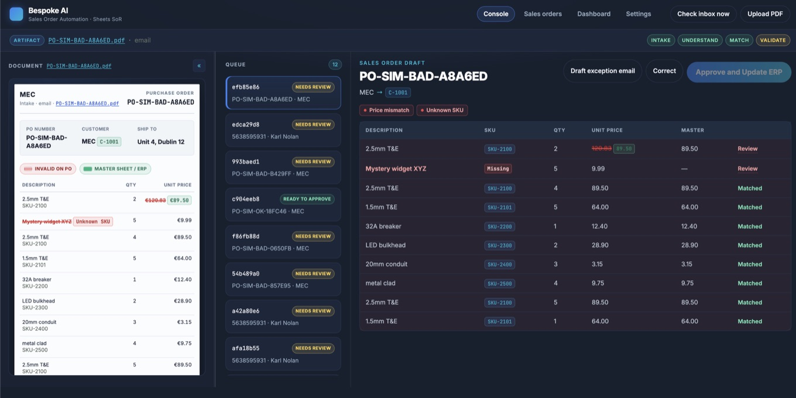

Same order desk. More POs through.
A fixed-scope pilot for sales ops and order-desk leads: inbound purchase orders from email into the ERP, with a human gate. Typical pilots from €8,000 + VAT.
Orders that sat in the queue can clear the same day — if the demand is there. We do not promise extra revenue.
Who this is for — and who it isn’t
Built for a mid-size distributor order desk. We say no when the work is a chatbot demo or a day-one auto-post to the ledger.
Sales ops / order-desk lead
- About 80+ POs per week (or equivalent order-desk load)
- A shared order inbox with PDF or Word attachments
- Staff re-keying into an ERP; buyers use nicknames, aliases, messy line items
- Someone who will approve before a row hits the ledger
We will turn this down
- Startups wanting a shiny chatbot or AI wrapper
- Anyone who wants auto-write to the ERP on day one
- Low volume — under ~80 POs/week, or no shared order inbox
- No human approver role, or no live customer/SKU/price catalog to match against
What’s in the fixed pilot
One intake channel, one ERP writeback path, typically live in 2–3 weeks. Feasibility is included — no separate scoping fee on this path.
Included
- Email intake with PDF/Word attachments
- AI extraction of PO number, buyer, ship-to, lines, quantities, prices — explicit gaps when the document is unclear
- Alias and nickname matching against live customer, SKU, and price catalogs
- Exception flags: price mismatch, unknown SKU, duplicate PO, missing ship-to
- Side-by-side approver console; writeback only after Approve
- Human gate until you sign off — optional auto-approve later, only for 100% matched POs
Out of scope
- Extra mailboxes, EDI, customer portals, or a second ERP
- Multi-entity / multi-company catalogs
- A chat UI, voice bot, or generic assistant
- Auto-posting to the ledger at launch
Messier than this fence? We will say so on the discovery call and quote a custom build — this page is not a day-rate scoping product.
Throughput you can see
The published result is faster, safer order entry — not a guaranteed euro of extra sales. Revenue only follows if delayed POs were sitting in the queue while buyers were still waiting.
Purchase orders into the ERP
The desk resolves exceptions instead of re-keying. Unapproved rows do not reach the ledger.
{kind=link}

Typical pilots from €8,000 + VAT
Fixed after a free 30-minute discovery call — once we confirm volume, inbox, ERP path, and the approver role. Quote may sit higher when catalogs or writeback are heavier; we will not pretend a one-size sticker covers every ERP.
- No separate €900 scoping day on this path — feasibility is inside the pilot
- Human review until you trust it; optional light support after go-live
- Confidentiality agreement before you share anything sensitive